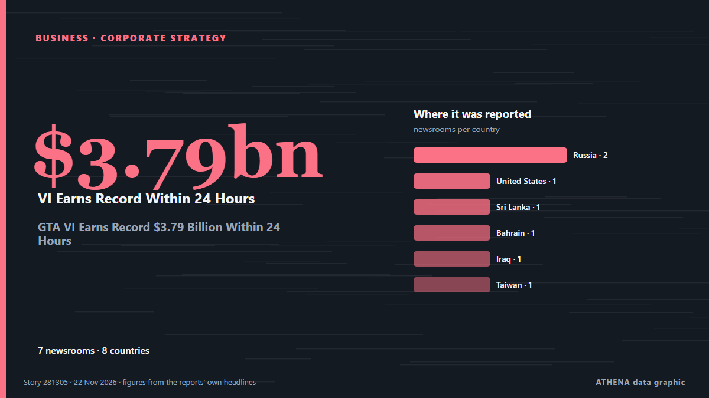

Business, Companies & Investment
SponsoredPresented by  Cybernetics and Artificial Intelligence Lab Welcome to the Cybernetics and Artificial Intelligence Laboratory, established at the Department of Business Administration of the National and Kapodistrian University of Athens. The lab is headed by Professor Dimitrios Thomakos. The lab aims to do research that can be published in top venues. Our research uses tools and methods of Artificial Intelligence, and lies in the following areas: - Forecasting - Decision making - Cyber security - Finance We are always looking forward to collaborating with exceptional students!
Cybernetics and Artificial Intelligence Lab Welcome to the Cybernetics and Artificial Intelligence Laboratory, established at the Department of Business Administration of the National and Kapodistrian University of Athens. The lab is headed by Professor Dimitrios Thomakos. The lab aims to do research that can be published in top venues. Our research uses tools and methods of Artificial Intelligence, and lies in the following areas: - Forecasting - Decision making - Cyber security - Finance We are always looking forward to collaborating with exceptional students!

Corporate strategyGTA VI Earns Record $3.79 Billion Within 24 Hours
GTA 6 generates a record $3.79 billion in first-day sales, surpassing its predecessor and setting a new entertainment benchmark as excitement reaches Kurdistan. from Kurdistan24 (English)
| 9 Nov | 108 |
|---|---|
| 10 Nov | 121 |
| 11 Nov | 102 |
| 12 Nov | 96 |
| 13 Nov | 63 |
| 14 Nov | 38 |
| 15 Nov | 36 |
| 16 Nov | 99 |
| 17 Nov | 88 |
| 18 Nov | 87 |
| 19 Nov | 81 |
| 20 Nov | 57 |
| 21 Nov | 14 |
| 22 Nov | 0 |
Xi’s bay-area vision offers scope for cooperation despite US, Tokyo hurdles: analysts
Chinese President Xi Jinping’s call for a global association of bay areas signals a long-term economic vision to the United States and Japan, although geopolitical tensions and difficulty finding… from South China Morning Post
Russia's Wildberries CEO Steps Down Days After EU Sanctions, Media Report
Nov 21 - Tatyana Kim, the head of Russia's largest online retailer Wildberries, has stepped down, Russian media reported on Saturday, days after the European Union added her to its Russia sanctions… from The Straits Times
‘GTA 6’ Hits Massive $3.79 Billion in First-Day Sales
Crime pays: Rockstar Games’ “Grand Theft Auto 6” preorder and first-day sales reached $3.79 billion, the game developer announced Friday. from Variety
Iran advances in UN E-Government Development Index
Iran has climbed 14 places in the United Nations E-Government Development Index (EGDI), rising from 101st in 2024 to 87th in 2026, according to the UN website. from Tehran Times
Shivo Tanzania’s Richard Ashby elected to ZATI board of directors
ZANZIBAR: Richard Ashby of Shivo Tanzania has been elected to the Board of Directors of the Zanzibar Association of Tourism Investors (ZATI), following the association’s Annual General Meeting (AGM)… from Daily News
Indonesia and China set out £47bn package of projects and investment plans
Agreements and proposals worth an indicative £47 billion were announced during APEC Economic Leaders' Week in Shenzhen, covering smart cities, manufacturing, energy and infrastructure financing. from The Scotsman
President Ilham Aliyev: Azerbaijan-Vietnam relations are of strategic importance
"Your (Vietnam's – ed.) rapid socio-economic development is known to the whole world, and a very good investment climate is very encouraging for many companies from different parts of the world,"… from AzerNews
Japan automakers to standardize parts, materials for efficiency
Japan's automakers will standardize specifications for some vehicle materials and parts to compete with overseas rivals, the Japan Au. from Mainichi (English)
Governor calls for stronger public-private partnership to accelerate economic growth
CITEX 2026 Brings Together Over 100 Iranian Technology Companies
Tehran’s CITEX 2026 exhibition is showcasing homegrown technological innovations aimed at addressing urban challenges and improving public services. from Tehran Times
Honda, Toyota recall 1.6 million vehicles over Takata airbag rupture risk
WASHINGTON: Honda and Toyota Motor said on Friday they are recalling about 1.6 million cars, trucks and SUVs over a risk that Takata airbag inflators could rupture.Honda and Toyota... from Oman Observer
Peru's President Fujimori thanks Japan for support in addressing El Niño phenomenon
The President of the Republic of Peru, Keiko Fujimori, thanked Japan's Emperor Naruhito for the Japanese people's solidarity and their support in helping Peru become better prepared for El Niño… from Andina (English)
‘GTA 6’ Raked In $3.8 Billion Sales On First Day—The Largest Entertainment Launch Ever
The video game has been on the market for less than 48 hours as of Friday. from Forbes Business
Hyundai Motor unveils new Elantra, Genesis G80 Hybrid at LA Auto Show
SEOUL, Nov. 20 (Yonhap) -- Hyundai Motor Co. said Friday it has unveiled its eig... from Yonhap (English)
Angola’s ANPG says Exxon takes $4 billion FID on Kizomba fields, makes discovery
Exxon Mobil and its partners in Angola’s offshore Block 15 have taken a final investment decision on a $4 billion redevelopment of the Kizomba A and B fields and made a hydrocarbon discovery in an… from Club of Mozambique
CycloKinetics wins $86.3 million Pentagon contract for alternative fuels
The Utah-based startup is pioneering new “drop-in” propellants that can substitute prevailing forms of energy. from Breaking Defense
Commission partially greenlights Belgium's final payment request for €1.38 billion under NextGenerationEU
European Commission Press release Brussels, 20 Nov 2026 Today, the European Commission partially greenlighted Belgium's sixth and final payment request for €1.38 billion under the Recovery and… from EU Commission competition press
Smith stepping down after almost 17 years as Britain's Davis Cup captain
LONDON: Britain’s longest-serving Davis Cup captain Leon Smith will step down after next week’s Finals in Italy, the Lawn Tennis Association confirmed on Friday. from Business Recorder
UK launches Africa investment platform in Kenya to help businesses grow and create jobs
UK Minister for Africa Kirsty McNeill announced Forge Africa, a UK-created platform backed by £40 million in investment, during a visit to Octavia Carbon’s Project Hummingbird in Gilgil. from Capital FM Kenya
ZIM Q3 Profit Surges to $830M as Freight Rates Rise 55%
Israeli containership operator ZIM Integrated Shipping Services reported a sharp increase in third-quarter 2026 earnings, driven by stronger freight rates, higher… from Maritime Professional
Palo Alto Networks buys AI startup Applied Compute for $4.5bn in stock
Palo Alto Networks has agreed to buy Applied Compute in an all-stock deal valued at $4.5bn. from The Next Web
Andrea Scrosati to Leave Fremantle Group
As Fremantle Group COO and CEO of Continental Europe, Scrosati oversaw Fremantle's international expansion into feature films and TV drama, including the acquisition of Element Pictures ('Poor… from The Hollywood Reporter
Sanofi rumoured to be eyeing high-profile Insmed takeover
Insmed’s shares spiked 20% following these rumours, while Sanofi’s stock dropped 2%, despite analysts backing the potential deal rationale. from Pharmaceutical Technology
GTA 6 breaks records as estimated sales top $2.3bn
Grand Theft Auto 6 is estimated to have become the biggest entertainment launch in history following the blockbuster video game’s debut on Thursday, after a 13-year wait. from Daily Mirror
GACL funds acquisition of 10 sniffer dogs to strengthen airport security
By: Valentia Tetteh The Ghana Airports Company Limited (GACL) has made a payment to support the acquisition of 10 sniffer dogs for the Narcotics Control Commission as part of efforts to strengthen… from GBC Ghana Online
Ghana, Norway to deepen maritime, oil and gas cooperation – Ablakwa
Ghana and Norway have agreed to strengthen cooperation in maritime activities, expand investments in the oil and gas sector and support startups, particularly those operating in the digital economy. from MyJoyOnline
Felicis leads $7.5M bet on Unsiloed AI to make enterprise documents usable by AI agents
With a team of just seven, Unsiloed AI plans to compete with tech giants and specialized startups in the crowded AI document-processing market. from TechCrunch
Portugal ranks seventh in the world for English proficiency
Portugal ranks seventh worldwide for English proficiency and knowledge, according to the EF English Proficiency Index 2026. from The Portugal News
EPFO approves systematic withdrawal plan - what it means
The SWP is intended to help members turn their retirement savings into a regular and predictable source of income while retaining ownership of the underlying corpus. from Times of India
AVEVA, PETROJET target digital twin handover to cut costly engineering project delays
AVEVA, a global leader in industrial software, and PETROJET, one of the largest engineering, procurement and construction (EPC) contractors in the Middle East and Africa, signed a Memorandum of… from Daily News Egypt
Staff list shows the scope of Prometheus' push to create an 'artificial general engineer'
Details have emerged about the personnel employed at Prometheus, a physical AI company co-run by Amazon founder Jeff Bezos that seeks to create a tool with the capabilities of an "artificial general… from DigiTimes Asia
US deportees in South Sudan went hungry as guards pocketed money from relatives, families say
Deportees expelled to South Sudan face hunger and thirst while guards allegedly extort money, which is pocketed rather than used to improve conditions. from Arab News
Sandals South Coast reopens under US$250-million ‘Sandals 2.0’ upgrade
WESTERN BUREAU: Sandals Resorts International rejected a quick repair-and-reopen approach following Hurricane Melissa, opting instead for an extensive transformation of three Jamaican properties… from Jamaica Gleaner